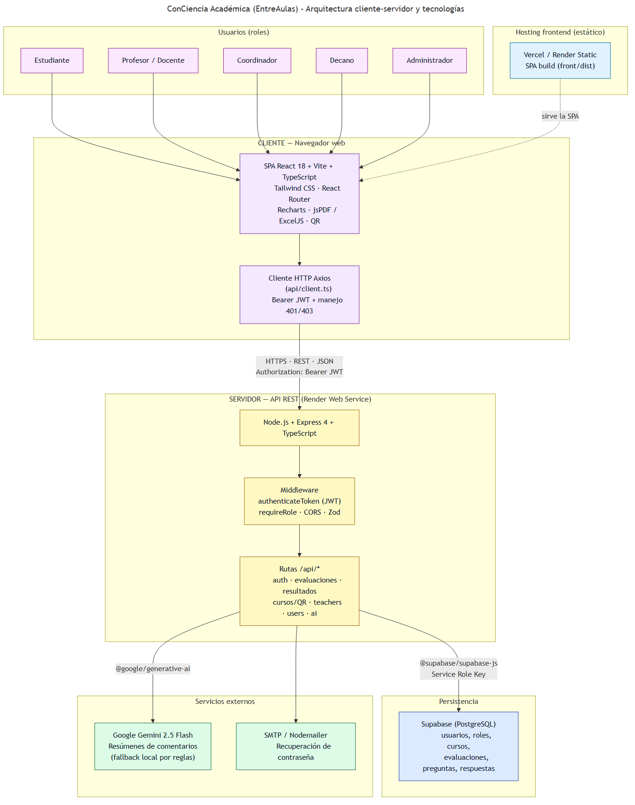

EntreAulas (ConCiencia Académica) — Arquitectura y tecnologías
Plataforma web para evaluación temprana docente en la Facultad de Ingenierías (UDEM).
Los estudiantes responden encuestas; profesores, coordinadores, decanos y administradores
consultan resultados, reportes y resúmenes asistidos por IA.
Diagrama de arquitectura
El sistema sigue un modelo cliente-servidor: un cliente (navegador con la SPA)
que consume una API REST en el servidor, la cual concentra la lógica de negocio, la autenticación
y el acceso a datos y servicios externos.

Arquitectura cliente-servidor: cliente (SPA React) → API REST (Node/Express) → Supabase, Gemini y SMTP.
Flujo de una petición típica
sequenceDiagram
participant U as Usuario
participant F as Frontend React
participant B as Backend Express
participant S as Supabase PostgreSQL
participant G as Google Gemini
U->>F: Login (email + contraseña)
F->>B: POST /api/auth/login
B->>S: Validar usuario y contraseña (bcrypt)
B-->>F: JWT + datos de usuario/roles
F->>F: Guardar token en localStorage
U->>F: Enviar evaluación / ver reportes
F->>B: Request con Authorization Bearer
B->>B: authenticateToken + requireRole
B->>S: INSERT / SELECT evaluaciones, resultados
B-->>F: JSON respuesta
U->>F: Ver resumen IA (dashboard)
F->>B: GET /api/ai/summarize/...
B->>S: Obtener comentarios abiertos
B->>G: Generar resumen (o fallback local)
B-->>F: summary + topics
Vista por capas
Capa
Tecnología
Responsabilidad
Presentación
React 18, TypeScript, Vite, Tailwind
UI, rutas, dashboards por rol, formularios Likert, QR
Cliente HTTP
Axios
Llamadas al API, interceptores JWT y manejo 401/403
Cliente HTTP centralizado (api/client.ts) con token JWT automático.
Context API (AuthContext)
Sesión global: login, roles múltiples, redirección al dashboard correcto.
Recharts
Gráficos en reportes y resultados (radar, barras, etc.).
Framer Motion
Animaciones en transiciones de UI.
react-qr-code
Códigos QR para acceso rápido a evaluaciones por curso.
ExcelJS / xlsx / file-saver
Exportar resultados y reportes a Excel desde el navegador.
jsPDF + jspdf-autotable + html2canvas
Generación de PDFs (reportes, pósters QR).
Lucide React / React Icons
Iconografía en menús y dashboards.
Backend (back/)
Tecnología
Uso en el proyecto
Node.js
Runtime del servidor API.
Express 4
Servidor HTTP, montaje de rutas bajo /api/*, middleware CORS y JSON.
TypeScript
Código tipado compilado a dist/ para producción.
Supabase JS (@supabase/supabase-js)
Acceso a PostgreSQL con Service Role Key (consultas desde el servidor, sin exponer la BD al front).
JWT (jsonwebtoken)
Tokens de sesión tras login; el front los envía en cada petición protegida.
bcrypt
Hash seguro de contraseñas al registrar o cambiar clave.
Zod
Validación de cuerpos de petición (registro, login, DTOs).
CORS
Restringir origen del frontend en producción (CORS_ORIGIN).
Nodemailer
Envío de correos (reset de contraseña vía SMTP).
Google Generative AI (@google/generative-ai)
Resúmenes de comentarios abiertos en evaluaciones (aiService.ts).
@huggingface/inference
Dependencia opcional/reserva; el flujo principal de IA usa Gemini.
Base de datos
Tecnología
Uso en el proyecto
Supabase
Hosting de PostgreSQL gestionado: tablas de usuarios, roles, profesores, estudiantes, cursos, periodos, preguntas por carrera, evaluaciones y respuestas.
SQL scripts (back/scripts/*.sql)
Seeds, inserción de preguntas por carrera, triggers (supabase-triggers.sql).
Nota: La documentación antigua en back/docs/setup.md menciona Prisma; el código actual no usa Prisma y accede a Supabase directamente vía SupabaseDB / supabaseClient.
Autenticación y autorización
Mecanismo
Descripción
Login email/contraseña
POST /api/auth/login — validación contra tabla de usuarios en Supabase.
JWT
Firmado con JWT_SECRET; incluye userId; expiración configurada en emisión del token.
authenticateToken
Middleware que verifica JWT y carga roles/permisos del usuario.
requireRole
Restringe endpoints por rol (estudiante, profesor, coordinador, decano, admin).
Rutas protegidas en front
Componente ProtectedRoute + allowedRoles en rutas sensibles.
Inteligencia artificial
Componente
Función
Gemini 2.5 Flash
Genera resúmenes narrativos de comentarios de estudiantes.
Fallback local
Si no hay API key o falla Gemini: resumen por reglas + extracción de temas (stopwords, léxico académico).
Endpoints
/api/ai/summarize, por profesor, carrera o facultad (requieren JWT y rol autorizado).
Detección de riesgo
Lógica en aiService para señalar posibles menciones de acoso en texto abierto.
Despliegue e infraestructura
Tecnología
Uso
Render (render.yaml)
Backend: Web Service Node (npm run build + npm start). Frontend: Static Site desde front/dist.
Vercel (front/vercel.json)
Alternativa recomendada solo para el frontend (SPA + rewrites a index.html).
Desarrollo local: levantar back (puerto 3000) y front (Vite) con npm run dev.
Módulos funcionales del sistema
mindmap
root((EntreAulas))
Autenticación
Login
Registro
Recuperar contraseña
Roles múltiples
Evaluación
Selección profesor/curso
Formulario Likert
Acceso por QR
Preguntas por carrera
Resultados
Dashboard profesor
Vista coordinador/decano
Estadísticas agregadas
Administración
Usuarios
Profesores
Programación encuestas
Reportes
Gráficos Recharts
Export Excel/PDF
IA
Resumen por profesor
Resumen por carrera/facultad